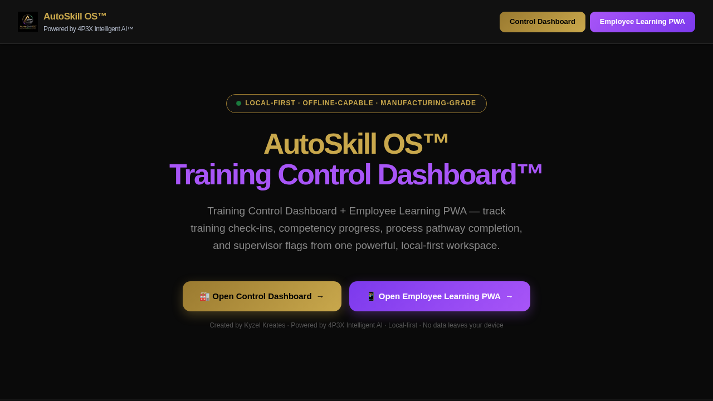

Demo Mode shows the product. Live Mode runs the product — once connected to a real backend, authentication, persistent records, and real-time sync.
What it is
AutoSkill OS™ demonstrates how the 4P3X base architecture can power a complete employee training, onboarding, and skills development platform — with a control dashboard for supervisors and a learning PWA for employees.
Where it can be used
Manufacturing, logistics, retail, healthcare support, professional services, construction, public sector, and any organisation needing scalable staff training.
Why it was built
Built to show that the same base that powers a therapy product can also power a workforce learning system — proving the architecture's adaptability across sectors with completely different user needs and data models.
When it is useful
When an organisation needs to onboard new staff quickly, track skills progression, deliver compliance training, or replace paper-based training records with a structured digital system.
Who it helps
HR managers, training coordinators, operations supervisors, L&D teams, factory floor managers, and franchise operators needing consistent training delivery.
How it works
Features a Training Control Dashboard for managers to track progress, flag support needs, manage content, and review completion — plus an Employee Learning PWA for guided modules, competency sign-offs, and personal progress tracking.
Key features
Architecture behind it
Refactored from the 4P3X base with training-sector identity, employee/supervisor split, progress data model, and configurable module delivery.
Demo Mode to Live Mode pathway
Demo Mode runs all training flows with sample employees and modules. Live Mode connects real employee records, HR systems, course authoring tools, and progress reporting backends.
What it can become next
Could expand to include video lesson delivery, external LMS integration, certification management, franchise training consistency, and AI-powered competency assessment.
Investor and employer relevance
Shows the creator's ability to target B2B workforce markets with a scalable, brandable product built on a reusable architecture — a commercially relevant sector with clear buyer personas.